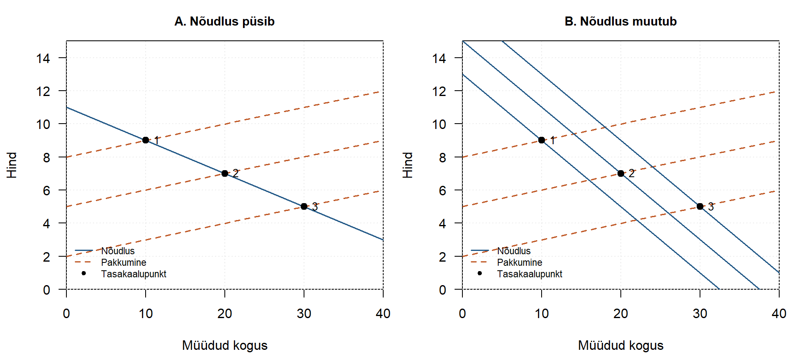

1 Põhjusliku mõju identifitseerimise võimalikkusest
Kui tahame teada, kas mõni meede toimib, ei piisa alati sellest, et osalejate tulemused erinevad mitteosalejate omadest. Sama andmetes nähtav erinevus võib ühel juhul olla meetme mõju, teisel juhul aga tuleneda sellest, et rühmad olid juba algusest peale erinevad. Kuidas saame neil selgitustel vahet teha?
Sellele küsimusele vastamise võimalikkust nimetatakse põhjusliku mõju identifitseerimiseks (identification). Mõju on identifitseeritud, kui olemasolevad andmed koos selgelt sõnastatud eeldustega võimaldavad huvipakkuva mõju üheselt kindlaks määrata. Kui samade andmetega sobib kokku mitu erinevat mõju suurust, ei ole mõju nende andmete ja eelduste põhjal üheselt identifitseeritud. See, et mõju on teatud eelduste korral leitav, ei tähenda veel, et need eeldused tegelikkuses kehtivad.
1.1 Näide: tööturukoolituse mõju palgale
Oletame, et soovime hinnata, kas tööturukoolitus suurendab osalejate palka. Kaks aastat pärast koolituse algust on keskmine kuupalk järgmine:
| Rühm | Keskmine kuupalk |
|---|---|
| Koolitusel osalenud | 2160 eurot |
| Koolitusel mitteosalenud | 2000 eurot |
| Erinevus | 160 eurot |
Osalejate keskmine palk on 160 eurot ehk 8% suurem kui mitteosalejatel. Kuid kas see 160 eurot on koolituse mõju?
Mõju leidmiseks peaksime teadma, milline oleks olnud koolitusel osalenute keskmine palk siis, kui need samad inimesed ei oleks koolitusel osalenud. Seda nimetame vastupidiseks olukorraks ehk kontrafaktuaalseks tulemuseks. Me ei näe seda olukorda samade inimeste jaoks: tegelikult nad ju osalesid koolitusel.
Oletame lihtsuse huvides, et nähtavad andmed on samad ka siis, kui võrdleme inimesi, kelle mõõdetud taustatunnused on ühesugused. Järgmised kaks hüpoteetilist seletust sobivad samade nähtavate palgaandmetega:
| Seletus 1: koolitus mõjus | Seletus 2: koolitus ei mõjunud | |
|---|---|---|
| Osalenute nähtav keskmine palk | 2160 eurot | 2160 eurot |
| Mitteosalenute nähtav keskmine palk | 2000 eurot | 2000 eurot |
| Osalenute keskmine palk siis, kui nad ei oleks koolitusel osalenud | 2000 eurot | 2160 eurot |
| Koolituse keskmine mõju osalenutele | 160 eurot | 0 eurot |
Esimese seletuse järgi oleksid osalejad ilma koolituseta teeninud keskmiselt 2000 eurot. Seega tõstis koolitus nende palka 160 euro võrra. Teise seletuse järgi oleksid nad ka ilma koolituseta teeninud 2160 eurot: näiteks otsustasid aktiivsemalt tööd otsivad inimesed nii koolitusel osaleda kui ka paremini tasustatud tööd leida. Sel juhul ei põhjustanud koolitus palgaerinevust.
Mõlemad seletused sobivad tabelis nähtavate andmetega, kuid annavad koolituse kohta erineva vastuse. Nähtav palgaerinevus on mõlemas 160 eurot. Ilma lisateabe või eeldusteta ei tea me, kumb selgitus on õige; võimalikud on ka vahepealsed lahendused.
Mitteosalejate palk võiks kirjeldada osalejate palka ilma koolituseta, kui rühmad oleksid selle küsimuse jaoks piisavalt võrreldavad. Just sellise võrdluse leidmine on mõjuhindamise keskne ülesanne.
1.2 Näide: nõudlus, pakkumine ja turu tasakaal
Sarnane probleem tekib majanduses ka siis, kui vaatleme turuhindu ja müüdud koguseid. Oletame, et kolmel perioodil näeme järgmisi hinna ja koguse kombinatsioone:
| Periood | Hind | Müüdud kogus |
|---|---|---|
| 1 | 9 | 10 |
| 2 | 7 | 20 |
| 3 | 5 | 30 |
Andmetes on madalama hinnaga perioodidel kogus suurem. Kas nende punktide põhjal saame teada, kui palju inimesed ostaksid rohkem, kui hind langeks ja muud nõudlust mõjutavad tingimused ei muutuks?
Jällegi on samade vaatlustega kooskõlas mitu selgitust:
- Pakkumine muutus, kuid nõudlus püsis samana. Näiteks vähenesid tootmiskulud ja pakkumiskõver liikus paremale. Hind langes ning tarbijad ostsid samal nõudluskõveral liikudes rohkem. Sel lihtsustatud juhul paiknevad vaadeldud tasakaalupunktid samal nõudluskõveral.
- Nii pakkumine kui ka nõudlus muutusid. Näiteks muutusid samal ajal tootmiskulud ja tarbijate sissetulekud või eelistused. Iga vaadeldud punkt on erinevate nõudlus- ja pakkumiskõverate lõikepunkt. Punkte ühendav joon ei pruugi siis näidata nõudluskõverat ega seda, kuidas ostjad reageeriksid üksnes hinnamuutusele.
Vasakul joonisel liigub pakkumine ning kõik kolm punkti asuvad samal nõudluskõveral. Paremal joonisel liiguvad nii nõudlus kui ka pakkumine, kuid vaadeldud punktid on täpselt samad. Nõudluskõverad on kahes olukorras erineva kaldega: üksnes hindade ja koguste vaatlemine ei ütle, kumb olukord tegelikult kehtib.
Ka vastupidine olukord on võimalik: kui nõudlus liigub, kuid pakkumine püsib samana, paiknevad tasakaalupunktid püsival pakkumiskõveral. Seega sõltub nähtavate punktide tõlgendus sellest, mis turul muutus ja mis jäi samaks.
1.3 Kas rohkem andmeid lahendab probleemi?
Rohkem vaatlusi aitab tavaliselt hinnata nähtavat seost täpsemalt. Näiteks võime suurema valimiga saada täpsema hinnangu 160-eurosele palgaerinevusele ja väiksema standardvea. See ei tõesta aga veel, et erinevus on koolituse mõju.
Kui kaks põhjuslikku selgitust annavad täpselt samasuguse vaadeldavate andmete jaotuse, ei erista neid ka sama liiki vaatluste lõputu lisamine. Väike standardviga näitab hinnangu statistilist täpsust; see ei kõrvalda valikust või muudest teguritest tulenevat nihet ega kinnita põhjuslikku tõlgendust.
Lisateave võib siiski aidata. Näiteks võivad varasemad tööturukäitumise andmed, teadmised koolitusele valimise reeglite kohta või juhuslikult jagatud koolituskohad muuta võrdluse usutavamaks. Kas need on piisavad, sõltub sellest, milline probleem algset võrdlust takistas.
1.4 Kuidas aitavad õpiku meetodid mõju identifitseerida?
Selle õpiku meetodid otsivad eri viisidel vastust samale küsimusele: milline oleks olnud tulemus siis, kui vaadeldud sekkumist ei oleks toimunud? Meetodite erinevus seisneb selles, millist teavet ja milliseid eeldusi nad selle vastuse leidmiseks kasutavad.
- Potentsiaalsete tulemuste mudel aitab sõnastada, kelle mõju soovime hinnata ja milline võrdlus oleks selleks vajalik. DAG ehk suunatud atsükliline graaf aitab esitada oletusi muutujate põhjuslike seoste kohta ja mõelda läbi, milliseid tunnuseid tuleks võrdluses arvesse võtta.
- Regressioon, sobitamine ning IPW ja AIPW võimaldavad võrrelda inimesi mõõdetud taustatunnuste alusel. Mõju tõlgendamiseks tuleb muu hulgas eeldada, et pärast asjakohaste tunnuste arvestamist ei erine rühmad enam selliste tegurite poolest, mis mõjutavad nii osalemist kui ka tulemust, ning et võrreldavaid inimesi leidub mõlemas rühmas.
- Juurdekasvude erinevuse meetod ehk DIF-DIF kasutab andmeid enne ja pärast sekkumist. Keskne eeldus on, et sekkumiseta oleksid rühmade keskmised tulemused aja jooksul muutunud paralleelselt. Rühmad ei pea alguses olema ühesuguse palgatasemega.
- Regressiooni katkemise meetod ehk RDD kasutab olukorda, kus osalemise võimalus või tõenäosus muutub lävendi juures. Vahetult lävendi eri pooltel olevad üksused peavad olema võrreldavad ning muud tulemust mõjutavad tegurid ei tohi samas kohas hüppeliselt muutuda. Ajas või ruumis asuva lävendi puhul tuleb muu hulgas arvestada samal ajal toimuvate sündmuste või piirkondade erinevustega.
- Instrumentmuutuja meetod kasutab osalemist muutvat välist tegurit ehk instrumenti. Sobiv instrument peab olema osalemisega seotud, sõltumatu tulemust mõjutavatest segavatest teguritest ega tohi tulemust mõjutada muu kanali kaudu. Hinnatud mõju võib seejuures kehtida eelkõige nende inimeste kohta, kelle osalemist instrument muudab.
- Sünteetilise kontrolli meetod koostab võrdlusüksustest kaalutud võrdluse, mis jäljendab sekkumiseelseid tulemusi. Sünteetiline DIF-DIF ehk SDID ühendab kaalumise ja juurdekasvude võrdlemise ning ASCM täiendab sünteetilist võrdlust ennustusmudeliga. Need meetodid vajavad põhjendust, miks koostatud võrdlus kirjeldaks sekkumiseta arengut; hea sobivus enne sekkumist üksi seda ei taga.
- Masinõpe, sealhulgas kausaalmets, LASSO ja kantregressioon, aitab näiteks arvestada paljusid tunnuseid või uurida mõju erinevust inimrühmade vahel. Ka keerukas ja hästi prognoosiv mudel ei kõrvalda automaatselt mõõtmata segavate tegurite probleemi: põhjuslik tõlgendus vajab endiselt sobivat uurimisplaani ja eeldusi.
Ükski meetod ei muuda seost automaatselt mõjuks. Enne tulemuse tõlgendamist tuleb küsida, kas meetodi eeldused on just selles olukorras usutavad. Mõne eelduse järeldusi saab andmetega kontrollida, kuid kõiki ei saa üksnes samade andmete põhjal tõestada. Seetõttu on olulised ka teadmised meetmest, selle rakendamisest ja uuritavast kontekstist.
1.5 Kelle kohta mõju kehtib?
Isegi kui mõju on ühes uuringus usutavalt identifitseeritud, ei pruugi see olla sama kõigi inimeste või kõigi poliitikamuudatuste puhul. Näiteks võib vabatahtlikult koolitusele kandideerinute mõju erineda nende inimeste mõjust, kelleni koolituse laiendamine alles jõuaks. Seetõttu tuleb küsida nii seda, kas mõju on uuritud rühma jaoks identifitseeritud, kui ka seda, kas tulemus on ülekantav meid huvitavale rühmale ja uude olukorda.
Kui mõju üheseks määramiseks vajalikud eeldused ei ole usutavad, võib mõnikord olla võimalik leida mõju võimalike väärtuste vahemik või uurida, kuidas järeldus muutub eelduste nõrgendamisel. Ka teadmine, et olemasolevad andmed ei võimalda küsimusele kindlat vastust, on otsustajale oluline.
Järgmises peatükis tutvume DAGidega, mis aitavad oma põhjuslikud oletused nähtavale tuua ja mõelda, millised tegurid võivad vaadeldava seose tõlgendamist mõjutada.
Kasutatud allikas
Peatüki algne idee ja kaks näidet on inspireeritud Carlos Chavezi blogikandest „Why Identification Matters: What more data cannot settle“ (6. november 2026). Carlos Chavezi Substack.